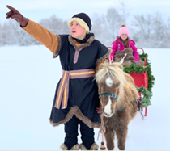
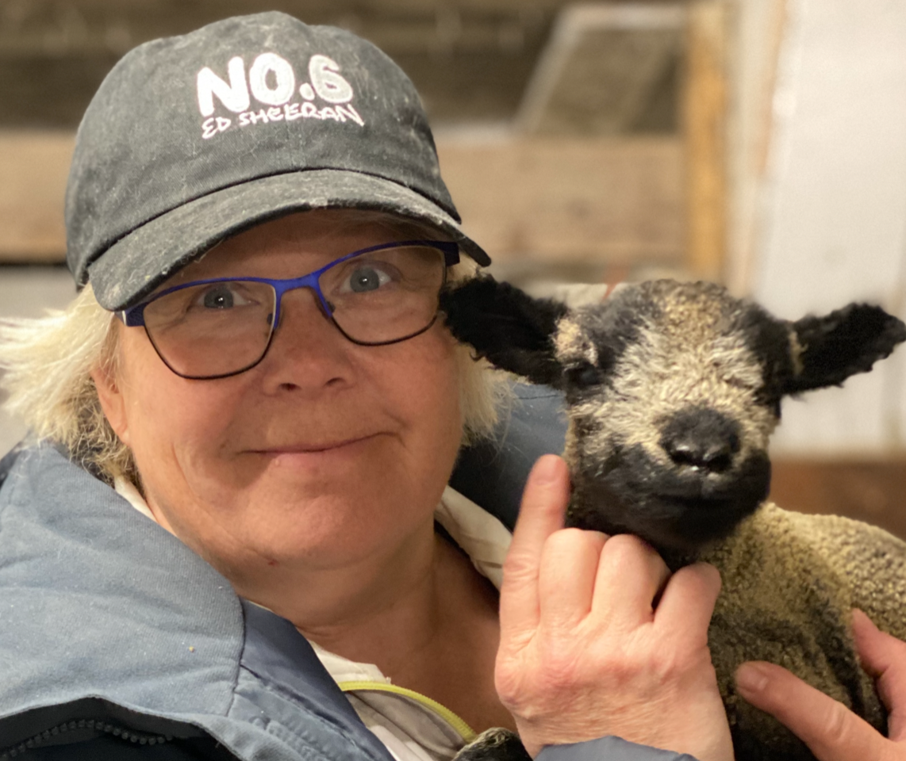

All about
Critter Visits
Critter Visits
Critter Visits at your location
Critter Visits is unique with our miniature farm animals and the up-close experience we host with you. Our Critters are handled daily at the farm and are ready to meet you and your guests for holding and snuggling. It’s animal therapy Farm Style!
Fees
Our Basic Critter Visit features at least 5 breeds of miniature farm critters and several varieties of most breeds. For one-hour at your location, with up to 10 people, pricing starts at $225 plus travel, applicable tolls and taxes. These animals will include a combination of: sheep & lambs, goats & kids, funky chickens & chicks, ducks & ducklings, geese & goslings, rabbits & bunnies, pigs & piglets, turkeys and guinea pigs.We can add one larger animal with our Critter Buddy staff for an additional charge of $150 plus taxes. Our current selection includes: miniature cows & calves, ponies, mini donkeys, and alpacas.
Perhaps you want JUST a pair of larger Critters? Fees start at $175 plus travel, tolls & taxes.
One Unicorn for petting, grooming, and walk-abouts will cost $175 per hour plus travel, tolls & taxes.
Our Pony Cart or Winter Sleigh with our specially-trained Critter Buddy staff of at least two begin at $250 per hour plus travel, tolls and taxes.
See information below for specifics regarding Schools, Day Care Centres, Retirement Residences & Senior Homes, Church Groups, Community, Seasonal and Fund-Raising Events.
CUSTOM EVENTS, for longer times and larger groups, are quoted to match your precise needs.
 Please EMAIL email, time, estimated crowd, venue for pricing. We are proud to be the Petting Zoo of record for the Lindsay Agricultural Exhibition. We are a preferred vendor for the Toronto District School Board and the City of Kawartha Lakes (Libraries and Special Events).
Our farm is not open to the public for General Drop-Ins or Tours. We do host winter events by appointment at our farm in Lakehurst, Ontario.
Click Here to learn about Santa Days in November & December.
Click Here to learn about Frozen Too Snowy Adventures in December, January and February.
Please EMAIL email, time, estimated crowd, venue for pricing. We are proud to be the Petting Zoo of record for the Lindsay Agricultural Exhibition. We are a preferred vendor for the Toronto District School Board and the City of Kawartha Lakes (Libraries and Special Events).
Our farm is not open to the public for General Drop-Ins or Tours. We do host winter events by appointment at our farm in Lakehurst, Ontario.
Click Here to learn about Santa Days in November & December.
Click Here to learn about Frozen Too Snowy Adventures in December, January and February.
Deposit is required
 A non-refundable, non-transferable deposit of 50% is required upon booking and we come rain, snow or sunshine. If, for any reason, your event must have a date change, we will work with you to find an alternate (fees required). Full payment will be due the Wednesday prior to the event. You will receive an email invoice with options to pay by Credit Card or E-Transfer. Your contract and heath information are available through a PDF link on your invoice.
A non-refundable, non-transferable deposit of 50% is required upon booking and we come rain, snow or sunshine. If, for any reason, your event must have a date change, we will work with you to find an alternate (fees required). Full payment will be due the Wednesday prior to the event. You will receive an email invoice with options to pay by Credit Card or E-Transfer. Your contract and heath information are available through a PDF link on your invoice.
For Events at your Location
 Critter Visits are the perfect solution to mark an early milestone or a birthday in the 100’s! Our miniature farm friends are a hit with all ages, as guests engage with the mini critters and with each other. Our team will arrive and set up inside or outside (weather dependent and with the health and safety of you and our animals in mind).
Critter Visits are the perfect solution to mark an early milestone or a birthday in the 100’s! Our miniature farm friends are a hit with all ages, as guests engage with the mini critters and with each other. Our team will arrive and set up inside or outside (weather dependent and with the health and safety of you and our animals in mind).
For Inside Events
Tarps are set down to protect the floor then covered with a bed of straw. See-through gates create a Critter Zone and the animals are set into this area. The Critter Collection are introduced to your guests by breed, including how to pet and hold. After Masking-Up, guests are invited into the zone, to visit in appropriate-sized groups. Parents must always be near & may join them inside our gated area to take photos, answer questions and to enjoy the experience with the kiddos.For Outside Events
 Our team works with your co-ordinator to find the best location for the season - shade for the heat of the day, or a warm sunny spot, out of the wind if the temperatures are cooler. The gates are set up and Critters set inside the area. Sometimes our larger animals can be led around on a leash in the backyard as a treat for the guest of honour and their friends.
Our team works with your co-ordinator to find the best location for the season - shade for the heat of the day, or a warm sunny spot, out of the wind if the temperatures are cooler. The gates are set up and Critters set inside the area. Sometimes our larger animals can be led around on a leash in the backyard as a treat for the guest of honour and their friends.
Guests are invited into the pens to spend time with the Critters - to hold and cuddle - to pet and to enjoy their unique personalities
Most Events
 Most events are 60-minutes in length and for a group of up to 10 guests. We can provide additional staff for larger groups or quote for a longer period of time. Please ask so we can customize for your needs! From darling ducklings who may take a swim, to soft and cuddly lambs to snuggle, the smiles will be plentiful and the memories golden.
Most events are 60-minutes in length and for a group of up to 10 guests. We can provide additional staff for larger groups or quote for a longer period of time. Please ask so we can customize for your needs! From darling ducklings who may take a swim, to soft and cuddly lambs to snuggle, the smiles will be plentiful and the memories golden.Fantasy Farm Friends
 Shall we pull out all the stops and dress-up our critters in frilly, sporty, super or silly costumes? Our sporty sheep to ducks with princess dresses can follow the theme of your party. Extra fees apply.Unicorns are Real
 Invite our rainbow Unicorn for walking and grooming or even pulling a Cart or Sleigh.
We can decorate the cart like a Princess’s Carriage and take your kiddos for a ride around the yard or park. Our Cart and Sleigh can hold up to 3 smaller children, two adults OR an adult plus a kiddo or two. We have the right to work with the party host to ensure the safety of our clients and critters. Permits and permissions must be arranged by the party host if using public spaces for the ride area. Fees start at $285 with two trained and dedicated staff.
Invite our rainbow Unicorn for walking and grooming or even pulling a Cart or Sleigh.
We can decorate the cart like a Princess’s Carriage and take your kiddos for a ride around the yard or park. Our Cart and Sleigh can hold up to 3 smaller children, two adults OR an adult plus a kiddo or two. We have the right to work with the party host to ensure the safety of our clients and critters. Permits and permissions must be arranged by the party host if using public spaces for the ride area. Fees start at $285 with two trained and dedicated staff.Anniversaries & Family Gatherings
Make the event special with the Critters arriving for all your guests. Adults can tell farm tales to wee ones, while seniors share their knowledge of living on the farm too."Do you remember your first horse ride?"
"Did I tell you the story of riding a sheep at the fair?"
"I hatched eggs in my grade one class and it was such fun!"
"Gramma collected eggs as her chore when she was just 5 years old!" Let us help bring the family together in a whole new way. City slickers develop bragging rights with the first time they pet a chicken or snuggle wee piggy
School Visits
Spending a full day at a school provides more than 5 classes the opportunity to link curriculum to the experience of handling live farm friends. Advance communication with our team to your teachers enhance your programs, and we focus on the life cycle, habitat or texture of our critters. High needs kiddos have animal therapy time and senior students will seek a chance to de-stress with a duck hug.Our clients have used this program in co-ordination with parent councils, rewards for scholastic excellence or fund raising, community celebrations and especially curriculum integration.
Day Care Centres
Nature-programming and tactile experiences will be a highlight for kiddos. Whether watching or interacting with our mini farm friends, this year-round opportunity provides your planning team with endless possibilities. We can set up inside or outside and bring the combination of critters that you prefer. Super for an open house to promote your facility or thank your clients.Retirement and Senior Homes
From our Critter of the Month option through the variations of all critters for many occasions, Critter Visits has a heart for your residents. The generation of farmers who recall their own donkey or piggie find our animals to be just like home. We have watched a chicken be held for an hour by more than one happy gramma. Stories of how a pony was the highlight of their youth, or of their hen who hid eggs for Uncle Robert to find are but a few tales we’ve been told. The city-raised folk are as delighted to hold a duckling for the first time as those who feel like it was just yesterday. Contact Karen to discuss regular sessions. Book early for family holiday events for clients, staff and all the families.Seasonal Parks
Recreational teams or park owners book us every year to provide a family event mid-week, weekends or holidays. Every age is engaged with the friendly farm animals of Critter Visits. Your programming funds are invested in a successful event as ducks, funky chickens, pot belly pigs and our darling bunnies join other farmyard friends for a session of snuggling. Book well in advance for that your special celebration.Day Camps
 School, YMCA, City and Private Camps call to book Critter Visits for March Break and Summer Sessions. The flexibility for farm animals to come to your location provide the security and simplicity you desire. From an hour to a full day, we are able to set up for a custom session, inside or outside. Consider a fund-raising event or open house with Critter Visits to add to your planned success. We will customize to your precise needs.
School, YMCA, City and Private Camps call to book Critter Visits for March Break and Summer Sessions. The flexibility for farm animals to come to your location provide the security and simplicity you desire. From an hour to a full day, we are able to set up for a custom session, inside or outside. Consider a fund-raising event or open house with Critter Visits to add to your planned success. We will customize to your precise needs.Church Groups
Object lessons around Palm Sunday, the 99 sheep, the Good Shepherd and of course our Live Nativity options bring the Gospel alive in a new way. Our Christian beliefs tug at our heartstrings as we attend church services with you. There is nothing more rewarding as stewards of our land, than doing programming at your location. Critter Visits also brings in the neighbourhood with an outreach or community event. Contact Karen with your inspired ideas and we will make it memorable with you.Seasonal Fun
Spread the Holiday Cheer with our critters decked out in green and red, costumes for Halloween or dressed up for your theme. Our ponies turn to reindeers with a little Critter magic. Book your Corporate Christmas Party with our Critters for all ages of guests. We come self-contained for an indoor event with tarps for the floor, straw bedding to absorb messes and the sweetest miniature farm animals you’ll see. Let’s brainstorm together soon.Special Events and Fund Raisers
Critter Visits participate at fun runs, community outreach, and prove to be a draw for fund raising with many charities. Our unique collection of miniature farm animals will tug on heart-strings and purse-strings of your potential doners. Municipalities continue to invite Critter Visits for Canada Day celebrations, anniversaries, grand openings, winter carnivals and summer festivals. We offer trained staff, customizable support and small to large set ups based on your needs. Call Karen to discuss your event and let’s begin promoting it soon.Add the magic of hatching eggs on your day
We can time a clutch of eggs to hatch on your special day!Depending on availability, our egg incubator can be rented to hatch eggs in your home. For a fee of; $165 for chicks or $225 for ducks (plus HST), we provide you with a complete kit. You will get the loan of the incubator with a clear, domed top (so you can watch the hatch), automatic egg turner, thermometer and humidity meter. You will get a step-by-step instruction book, a variety of eggs as well as chick/duck food with a feeder and vitamin powder and a drinker bottle. We're an email or phone call away with any questions you may have along the journey. The incubator must be returned to our schedule. Click on the HATCHING PROGRAM link for full details
Virtual Critter Visits
 For times when you just can’t get your group together, we can connect with you via ZOOM or your preferred software. For the classroom, community living, retirement or seniors centre, call on us to bring some fuzzy friends live on screen. Our interactive sessions have information HERE
For times when you just can’t get your group together, we can connect with you via ZOOM or your preferred software. For the classroom, community living, retirement or seniors centre, call on us to bring some fuzzy friends live on screen. Our interactive sessions have information HERE
© Critter Visits of Woolley Wonderland Farm Inc. 2020